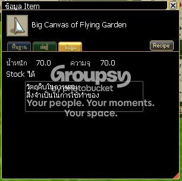

กล่อง 2 เคยได้ดีสุดก็รองเท้านักดาบชาย เลเวล 35
กล่อง 1 ไม่เคยได้อะไรดีๆเลย T_T
แล้วก็ Used Book เจออยู่ 80k เองง่ะ เมื่อวานนี้แต่ไม่ได้ลาก(จนง่ะตอนนี้)
ปล.ที่ YuuJung สงสัยน่าจะมาจาก Sig อันก่อนอันนี้นะท่านจิ๊บ
/me เผ่นละเหวย หุหุ อ๊ะฟิ้วๆ~~~
:twisted:
http://eco.froztic.in.th/archive/ecofanclub/
[ปิดแล้ว] -‘•’ [F]@rmeR & /-\|che[M]i$t [G]uiDe ‘•’-
http://eco.froztic.in.th/archive/ecofanclub/viewtopic.php?f=16&t=13197
หน้า 106 จากทั้งหมด 129
ไม่ค่อยแน่ใจนะว่าได้จากกล่องไหนมากกว่า อาจจะเป็นเพราะเปิดกล่อง1มากก็เป็นได้ ของดีสุดที่ได้ไม่แน่ใจ แต่อาจจะเป็นรองเท้าแม่ค้าเลเวล35 กับขวานLordly Axeล่ะมั้ง...
แต่ก่อนเวลาเบื่อๆ ก็จะเอาตัวชาวนานี่แหล่ะเดินวนรอบแมปทางด้านตะวันตก เก็บกล่องจนที่เต็มแล้วกลับมาเปิดวันละหลายๆรอบ จนเพราะเปิดกล่องโดยแท้- -"...
หลังๆเปิดกล่อง2-3เยอะ เพราะเอาทาราทาเบะไปหาหินที่เกาะเรือรบ ได้ของมาดีมั่งไม่ดีมั่ง ส่วนใหญ่จะเป็นวัตถุดิบในการทำของมากกว่า...
แต่ก่อนเวลาเบื่อๆ ก็จะเอาตัวชาวนานี่แหล่ะเดินวนรอบแมปทางด้านตะวันตก เก็บกล่องจนที่เต็มแล้วกลับมาเปิดวันละหลายๆรอบ จนเพราะเปิดกล่องโดยแท้- -"...
หลังๆเปิดกล่อง2-3เยอะ เพราะเอาทาราทาเบะไปหาหินที่เกาะเรือรบ ได้ของมาดีมั่งไม่ดีมั่ง ส่วนใหญ่จะเป็นวัตถุดิบในการทำของมากกว่า...
โอกาสได้รองเท้ายากยิ่งนัก TwT
กล่อง 1 จริงๆมันก็ไม่ได้ดีเท่าไหร่ แต่ของบางอย่างอย่างพวก Happy Coglone พวกนี้เห็นออกบ่อยพอควร
ถ้ากล่อง 4 พวกยานี่ฮึ่มเลย ทั้งขวดทั้งเม็ด และสารพัด coglone ยกเว้น happy = ="
ค่าไหนเต็มเร็วค่าไหนเต็มช้าช่างมันเถอะงิ
แต่ค่าสุดท้ายโครตจะช้า แง TwT
Drug Recipe นี่แปล wiki เอาเองเลย ใช้ส่วนตัว =w="
แต่ก็อีกแหละ Dark Coglone ดันทำไม่ได้ แง่ง แค้น =A=!!
PS : เคยโดยร้านไปอัน use book TwT
กล่อง 1 จริงๆมันก็ไม่ได้ดีเท่าไหร่ แต่ของบางอย่างอย่างพวก Happy Coglone พวกนี้เห็นออกบ่อยพอควร
ถ้ากล่อง 4 พวกยานี่ฮึ่มเลย ทั้งขวดทั้งเม็ด และสารพัด coglone ยกเว้น happy = ="
ค่าไหนเต็มเร็วค่าไหนเต็มช้าช่างมันเถอะงิ
แต่ค่าสุดท้ายโครตจะช้า แง TwT
Drug Recipe นี่แปล wiki เอาเองเลย ใช้ส่วนตัว =w="
แต่ก็อีกแหละ Dark Coglone ดันทำไม่ได้ แง่ง แค้น =A=!!
PS : เคยโดยร้านไปอัน use book TwT
recipe นี่ผมได้มาเกือบครบทุกอันละมั๊ง ขายไปอันละ 100-200k เองนะ ตั้งเป็นอาทิตย์กว่าจะมีคนหยิบ - -*
เหลือแต่ accessory เก็บไว้เผื่อใช้ กะ how to make marionette (ใครจะโง่มาหยิบไหม - -)
ชั้นวางหนังสือไม่เห็นสวยเลยงะ ทำไมอยากได้กันจัง = =
เหลือแต่ accessory เก็บไว้เผื่อใช้ กะ how to make marionette (ใครจะโง่มาหยิบไหม - -)
ชั้นวางหนังสือไม่เห็นสวยเลยงะ ทำไมอยากได้กันจัง = =
คงอยากได้เพราะของประดับไม่ค่อยมีมั้ง =w="
อยากให้มันมีเยอะๆเหมือน My Camp ของ TricksOer จัง
(พูดเหมือนมีเงินซื้อเร้ย~ TAT)
แต่เอาเข้าจริงๆคิดว่าปั้มเงินแบบสุดๆพอไหวเอามั้ง กำลังดูแนวทางปั้มเงินทั้งหลาย
รูปแบบ A -> Farmer + Milk Pitcher
เฉลี่ยชั่วโมงละ 5-20 แผ่น (เก็บนมส่งได้อีกนิดหน่อย =w=") เอาซัก 13 แผ่นก็~ 13000 . . . (ถ้ารวมครบ 100 เอาไปทำ Silver รู้สึกจะได้ถึงสองแสน)
รูปแบบ B -> หมีๆๆๆๆๆๆ
ราวๆ 20 นาที Fer เต็มตัวขนรุงรัง ~ 6000-8000 (ยังไม่นับ skin)
รูปแบบ C -> Fallen Log
เก็บ Strong Wood แต่หนัก = =" ช่วงนี้คงได้ไม่เกิน 2000 แล้วมั้ง 2000 ก็หรูตายชักละ ดีๆก็ได้ log มาแบกเล่นไปในตัว หลักหมื่นอยู่
รูปแบบ D -> ปั่น Mold
ได้ Dry Apple มาเป็นเข่ง ตั้งขายกันเมื่อยมือ ต้องมีทุนสูงด้วย
รูปแบบ E -> ปั้น Raigyou
ขายออกนานไปหน่อยมั้ง ใช้เวลานานกว่าเยอะด้วยกว่าจะได้ Sticky พอ
รูปแบบ F -> วิ่งดันใต้เก็บโกย
เป้ง! โดนเวทย์ลอย ลากกันสนุก เท้าใครดีมือใครไวรอดไป
รูปแบบ G -> ซื้อของขาย
ไปทำรูปแบบอื่นเหอะ ยกเว้นอยากเดินตลาดจริงๆ
รูปแบบ Z -> เปิดกล่อง
ดวงไม่มีเหมือนเอาเงินไปเทน้ำ ดวงดีกำไรเป้งเหมือนสตอเบอร์รี่
นึกออกแค่นี้ง่ะ lv ต่ำจัด =A="
ดูแล้วสงสัยได้เล่นรูปแบบ A - D
อยากให้มันมีเยอะๆเหมือน My Camp ของ TricksOer จัง
(พูดเหมือนมีเงินซื้อเร้ย~ TAT)
แต่เอาเข้าจริงๆคิดว่าปั้มเงินแบบสุดๆพอไหวเอามั้ง กำลังดูแนวทางปั้มเงินทั้งหลาย
รูปแบบ A -> Farmer + Milk Pitcher
เฉลี่ยชั่วโมงละ 5-20 แผ่น (เก็บนมส่งได้อีกนิดหน่อย =w=") เอาซัก 13 แผ่นก็~ 13000 . . . (ถ้ารวมครบ 100 เอาไปทำ Silver รู้สึกจะได้ถึงสองแสน)
รูปแบบ B -> หมีๆๆๆๆๆๆ
ราวๆ 20 นาที Fer เต็มตัวขนรุงรัง ~ 6000-8000 (ยังไม่นับ skin)
รูปแบบ C -> Fallen Log
เก็บ Strong Wood แต่หนัก = =" ช่วงนี้คงได้ไม่เกิน 2000 แล้วมั้ง 2000 ก็หรูตายชักละ ดีๆก็ได้ log มาแบกเล่นไปในตัว หลักหมื่นอยู่
รูปแบบ D -> ปั่น Mold
ได้ Dry Apple มาเป็นเข่ง ตั้งขายกันเมื่อยมือ ต้องมีทุนสูงด้วย
รูปแบบ E -> ปั้น Raigyou
ขายออกนานไปหน่อยมั้ง ใช้เวลานานกว่าเยอะด้วยกว่าจะได้ Sticky พอ
รูปแบบ F -> วิ่งดันใต้เก็บโกย
เป้ง! โดนเวทย์ลอย ลากกันสนุก เท้าใครดีมือใครไวรอดไป
รูปแบบ G -> ซื้อของขาย
ไปทำรูปแบบอื่นเหอะ ยกเว้นอยากเดินตลาดจริงๆ
รูปแบบ Z -> เปิดกล่อง
ดวงไม่มีเหมือนเอาเงินไปเทน้ำ ดวงดีกำไรเป้งเหมือนสตอเบอร์รี่
นึกออกแค่นี้ง่ะ lv ต่ำจัด =A="
ดูแล้วสงสัยได้เล่นรูปแบบ A - D
Nimble เขียน: รูปแบบ F -> วิ่งดันใต้เก็บโกย
เป้ง! โดนเวทย์ลอย ลากกันสนุก เท้าใครดีมือใครไวรอดไป
อ่านแล้วฮาดีอ่ะ :lol:
ลองปั้นโนวิทในอีกไอดีนึง ปั้นมาเพื่อเอาเสื้อมาย้อมสีโดยเฉพาะ
ปั้นลบ ปั้นลบ ไป 30 ตัวละ
ยังไม่ได้เสื้อสีขาวเลยซ้ากกกกกกตัว - -*
ดวงฉานมันโหดร้ายขนาดนั้นเชียวเรอะ - -*
ซื้อเอาอาจจะเร็วกว่าก็จริง
แต่ก็อย่างว่าล่ะ ทำเองมันภูมิใจกว่า TwT
ปล. หนังสือ Recipe นี่แฟนผมมีเล่มนึงเปิดได้จากกล่อง 6 เป็นหนังสือทำของเวทย์อ่ะ
แต่เจ้าตัวไม่ค่อยได้ลองทำหรอก - -*
TwT ฮือๆๆๆ
โอกาสหลอมติด 80%
หลอม ล้มเหลว 3 ครั้งซ้อน ... (หลอม Tiara ครอบหมวก เลเวล 60)
ฮือๆๆๆๆๆ
ปล. รูปแบบ R - ปั่นหุ้น Resurrection Potion เต็มที่ แล้วเทขายตูมเดียว 1000 ขวด
ปล2. เคลียของไปตั้งรกรากที่ Far East เรียบร้อย = = เริ่มเดินโรงงานผลิตยาชุบ หลังสอบ !
ปล3. Smock ถ้าย้อมครั้งแรก จะสุ่มเลือกสี .... ย้อมครั้งทีสองจะเลือกสีได้
โอกาสหลอมติด 80%
หลอม ล้มเหลว 3 ครั้งซ้อน ... (หลอม Tiara ครอบหมวก เลเวล 60)
ฮือๆๆๆๆๆ
ปล. รูปแบบ R - ปั่นหุ้น Resurrection Potion เต็มที่ แล้วเทขายตูมเดียว 1000 ขวด
ปล2. เคลียของไปตั้งรกรากที่ Far East เรียบร้อย = = เริ่มเดินโรงงานผลิตยาชุบ หลังสอบ !
ปล3. Smock ถ้าย้อมครั้งแรก จะสุ่มเลือกสี .... ย้อมครั้งทีสองจะเลือกสีได้
เห ตอนหมาย้อมกระโปรงนี่เลือกสีได้แฮะ ย้อมอย่างอื่นเลือกไม่ได้เหรองิ =w=?
Lafara เขียน:
ปล3. Smock ถ้าย้อมครั้งแรก จะสุ่มเลือกสี .... ย้อมครั้งทีสองจะเลือกสีได้
เห จริงดิ???
ทำไมผมเลือกไม่ได้หว่า =w="
ก็ลบทิ้ง ลบทิ้ง ดองเสื้อทีละ 10 ตัวไปย้อมสี เห็นมันสุ่มให้ทุกรอบ
รึ เราไปย้อมผิดตัวหว่า +w+"
ปล. แต่ทำเสร็จะครับ ^^
เว็บทำใหม่และ
http://www.eco.in.th/information_game_j ... ystem.html
วิธีสลับเปลื่ยนอาชีพ ค่อนข้างจะงง ๆอยู่เฮ้ย - -
สกิลมาแล้ว
http://www.eco.in.th/information_jobs_marionest.html
ไปดูเอาเอง แต่คงรู้ๆกันอยู่แล้วและ - -
สรุปแล้ว มาริโอเน็ตค่อนข้างจะต้องอาศัย สายเวทย์มากกว่าที่คิด และคงจะสมใจอย่างที่ทุกๆคนเฝ้ารอ เพราะ คงจะแหวแนวจากที่เคยเล่น เลิ้ยง Pet ทำยาทำ อาหาร เย็บผ้าไป อยู่โดย สิ้นเชิง
แต่ การสลับนั้น รู้สึกเหมือนว่าจะ อ่านไม่ค่อยเข้าใจ ( เบลอๆ ครับ อย่าโทษผมเลย แหกตาอยู่ถึง ตี 1 โน่นนะ ) ใครอ่านแล้วเข้าใจก็ช่วยอธิบายเหมือนกัน เข้าใจแค่ว่าจะต้องใช้ยาอะไรในการ สลับด้วยแค่นั้นและ
ช่วงนี้ใคร 65 แล้ว มั่ง รายงานตัวกันด้วยนะครับ ใครยังไม่ 65 ก็ บอกกันด้วย
บอกเซิฟแล้วก็ชื่อตัวละครนะ ^^
จะ สำรวจ ประชากรที่มีอยู่ของพวกเราใน ตอนนี้
http://www.eco.in.th/information_game_j ... ystem.html
วิธีสลับเปลื่ยนอาชีพ ค่อนข้างจะงง ๆอยู่เฮ้ย - -
สกิลมาแล้ว
http://www.eco.in.th/information_jobs_marionest.html
ไปดูเอาเอง แต่คงรู้ๆกันอยู่แล้วและ - -
สรุปแล้ว มาริโอเน็ตค่อนข้างจะต้องอาศัย สายเวทย์มากกว่าที่คิด และคงจะสมใจอย่างที่ทุกๆคนเฝ้ารอ เพราะ คงจะแหวแนวจากที่เคยเล่น เลิ้ยง Pet ทำยาทำ อาหาร เย็บผ้าไป อยู่โดย สิ้นเชิง
แต่ การสลับนั้น รู้สึกเหมือนว่าจะ อ่านไม่ค่อยเข้าใจ ( เบลอๆ ครับ อย่าโทษผมเลย แหกตาอยู่ถึง ตี 1 โน่นนะ ) ใครอ่านแล้วเข้าใจก็ช่วยอธิบายเหมือนกัน เข้าใจแค่ว่าจะต้องใช้ยาอะไรในการ สลับด้วยแค่นั้นและ
ช่วงนี้ใคร 65 แล้ว มั่ง รายงานตัวกันด้วยนะครับ ใครยังไม่ 65 ก็ บอกกันด้วย
บอกเซิฟแล้วก็ชื่อตัวละครนะ ^^
จะ สำรวจ ประชากรที่มีอยู่ของพวกเราใน ตอนนี้
ยังไม่65ครับ เลเวลอยู่ในราว36-45 ตัวที่สูงสุดคือชาวนา...
ชาวนา - ソノラ
แม่ค้า - Morgana
ทาราทาเบะ - ศิคาล
เล่นเรื่อยๆเลยตอนนี้ เก็บเงินไม่ทันสวนลอยฟ้าแล้วโฮๆ เพิ่งมีแค่ล้านกว่าๆ...
------------------------------------------------------------------------------------------------------------
เมื่อวาน เรื่องเกิดขึ้นที่ด้านตะวันออกของเมืองอาโครเนีย ผมที่ดีใจที่เข้าเกมได้อีกครั้งกำลังตรวจเช็คของในโกดังอยู่ ว่ามีอะไรเหลือให้ส่งเควสได้ จู่ๆเพื่อนในริง2คนก็ร้องโวยวายขึ้น จับความได้ว่าเขาเปิดกล่องแล้วพบของประหลาดชิ้นหนึ่งมีนน.มาก และยังไม่ได้ส่อง
ชาวนาของผมได้รีบไปในที่เกิดเหตุการณ์ทันที เพื่อที่จะรับของนั้นมาส่องแทน หลังจากนั่งคุยกันซักพัก พวกเขาก็ได้ส่งของมาให้ผม มันเป็น...

แทบอยากกระโดดตีลังกาหลายตลบ ใบเรือคร๊าบ ใบเรือ>< เป็นหนี้เป็นสินทันที ขอผ่อนซื้อต่อ...
สวนลอยฟ้าของผม ได้มาชิ้นนึงแล้วT^T...
สดๆร้อนๆ มาแปะให้จี้เส้นกันเล่นๆ...

นี่ผมขายไอเท็ม"เทพ"ในราคาที่ถูกมากเลยสินะ...
/me เอาไปโยนใส่กระทู้บั๊กไลฟ์ เอ๊ย บั๊กรีพอร์ท...
ชาวนา - ソノラ
แม่ค้า - Morgana
ทาราทาเบะ - ศิคาล
เล่นเรื่อยๆเลยตอนนี้ เก็บเงินไม่ทันสวนลอยฟ้าแล้วโฮๆ เพิ่งมีแค่ล้านกว่าๆ...
------------------------------------------------------------------------------------------------------------
เมื่อวาน เรื่องเกิดขึ้นที่ด้านตะวันออกของเมืองอาโครเนีย ผมที่ดีใจที่เข้าเกมได้อีกครั้งกำลังตรวจเช็คของในโกดังอยู่ ว่ามีอะไรเหลือให้ส่งเควสได้ จู่ๆเพื่อนในริง2คนก็ร้องโวยวายขึ้น จับความได้ว่าเขาเปิดกล่องแล้วพบของประหลาดชิ้นหนึ่งมีนน.มาก และยังไม่ได้ส่อง
ชาวนาของผมได้รีบไปในที่เกิดเหตุการณ์ทันที เพื่อที่จะรับของนั้นมาส่องแทน หลังจากนั่งคุยกันซักพัก พวกเขาก็ได้ส่งของมาให้ผม มันเป็น...
แทบอยากกระโดดตีลังกาหลายตลบ ใบเรือคร๊าบ ใบเรือ>< เป็นหนี้เป็นสินทันที ขอผ่อนซื้อต่อ...
สวนลอยฟ้าของผม ได้มาชิ้นนึงแล้วT^T...
สดๆร้อนๆ มาแปะให้จี้เส้นกันเล่นๆ...
นี่ผมขายไอเท็ม"เทพ"ในราคาที่ถูกมากเลยสินะ...
/me เอาไปโยนใส่กระทู้บั๊กไลฟ์ เอ๊ย บั๊กรีพอร์ท...
เอ... ใบเรือนั่นไว้ทำสวนหรอ
แต่เราไม่มีนะ เห็นแต่คนรับ แบบสามเหลี่ยมแล้วก็สี่เหลี่ยม - -
ไม่รู้ว่ามีความแตกต่างกันตรงไหนอธิบายทีซิ
ชาวนา เวล 47คะ
เซิฟ โมจิ อางิ
::รายงานตัวด้วยคนคะ :oops: ::
วันนี้เป็นอะไรไม่รู้ไปคุยกับนางพยาบาลมาแล้วเด้ง ลองหลายรอบก็ยังคงเป็นอยู่
ทั้งๆที่ตะก่อนมันไม่เคยเป็นเลยนะ :cry: (เรนเจอร์คุยครั้งแรก)
แต่ว่าพอเอาชาวนาไปคุยกับไม่เด้ง รักษาตามปกติ (คุยหลายรอบแล้ว)
ใครพอรู้มั้งหรือว่าเป็นบั๊ค จะได้ไปแจ้งไว้ซะหน่อย..
Multi condition เนี้ยเควสชาวนาต้นๆช่ายม๊า จำไม่ได้แระทำไง
อันนี่ท่าจะขายดีพอๆกับ Mold เลยก็ว่าได้ ไม่ต้องเก็บเวลด้วย
Ps: สวนลอยฟ้ากำลังจะมาเงินยังมิพอ (ปั่นเงินกันสุดยิก ยิกๆๆ)
Ps2: จิ๊บคุง เราหมายถึงลายเซ็นต์นะ รูปน่ารักดี
Ps3: แหวนชั้นไหนได้สีอะไรอา ใครบอกได้มั้ง ถ้าทำก็คงชั้น 5รวด
ไม่อยากเดินไกล ยกเว้นมีอะไรน่าสนใจ
แต่เราไม่มีนะ เห็นแต่คนรับ แบบสามเหลี่ยมแล้วก็สี่เหลี่ยม - -
ไม่รู้ว่ามีความแตกต่างกันตรงไหนอธิบายทีซิ
ชาวนา เวล 47คะ
เซิฟ โมจิ อางิ
::รายงานตัวด้วยคนคะ :oops: ::
วันนี้เป็นอะไรไม่รู้ไปคุยกับนางพยาบาลมาแล้วเด้ง ลองหลายรอบก็ยังคงเป็นอยู่
ทั้งๆที่ตะก่อนมันไม่เคยเป็นเลยนะ :cry: (เรนเจอร์คุยครั้งแรก)
แต่ว่าพอเอาชาวนาไปคุยกับไม่เด้ง รักษาตามปกติ (คุยหลายรอบแล้ว)
ใครพอรู้มั้งหรือว่าเป็นบั๊ค จะได้ไปแจ้งไว้ซะหน่อย..
Multi condition เนี้ยเควสชาวนาต้นๆช่ายม๊า จำไม่ได้แระทำไง
อันนี่ท่าจะขายดีพอๆกับ Mold เลยก็ว่าได้ ไม่ต้องเก็บเวลด้วย
Ps: สวนลอยฟ้ากำลังจะมาเงินยังมิพอ (ปั่นเงินกันสุดยิก ยิกๆๆ)
Ps2: จิ๊บคุง เราหมายถึงลายเซ็นต์นะ รูปน่ารักดี
Ps3: แหวนชั้นไหนได้สีอะไรอา ใครบอกได้มั้ง ถ้าทำก็คงชั้น 5รวด
ไม่อยากเดินไกล ยกเว้นมีอะไรน่าสนใจ
Multi conditionส่งเควสชาวนาหรือป่าวไม่รู้ แต่เคยใช้ส่งเควสแม่ค้าครับ หลังๆไม่ได้ใช้แล้ว ได้มาก็โยนขายทิ้ง...
เพื่อนได้มาอีกแล้วครับ งานนี้บอกจะลุยดันปลาหาของทำสวนลอยฟ้ามาให้ เห็นว่ากำลังแย่งตีกล่องกะอีกคนที่เจอบนนั้น แอบสะใจที่พอตัวเองตาย อีกฝ่ายก็ตายลงมาเหมือนกัน 555...

อันแรกที่ได้มา เปิดได้จากกล่องเท่านั้นไม่มีสูตรการทำ...
อันนี้มีสูตรการทำ แต่ก็เปิดได้จากกล่องเหมือนกัน รายละเอียดดูได้ที่กระทู้สวนลอยฟ้า...
(หมายเหตุ ขี้เกียจ 555)
ปล. ลืมบอกว่าอยู่ทาโกะยากิ แต่คงรู้กันแล้วมั้ง :oops: ...
เพื่อนได้มาอีกแล้วครับ งานนี้บอกจะลุยดันปลาหาของทำสวนลอยฟ้ามาให้ เห็นว่ากำลังแย่งตีกล่องกะอีกคนที่เจอบนนั้น แอบสะใจที่พอตัวเองตาย อีกฝ่ายก็ตายลงมาเหมือนกัน 555...
อันแรกที่ได้มา เปิดได้จากกล่องเท่านั้นไม่มีสูตรการทำ...


อันนี้มีสูตรการทำ แต่ก็เปิดได้จากกล่องเหมือนกัน รายละเอียดดูได้ที่กระทู้สวนลอยฟ้า...
(หมายเหตุ ขี้เกียจ 555)
ปล. ลืมบอกว่าอยู่ทาโกะยากิ แต่คงรู้กันแล้วมั้ง :oops: ...
ขอประทานโทษคะ จิงๆแล้ว Multi condition เปงของเควสแม่ค้านะ
เขียนผิด (มันไม่ได้เกี่ยวกันเลย เหอะๆ)
ใครพอจะรู้มั้งมั้ยคะว่า นมกับเนยเอาไปทำไรได้บ้าง
หลังจากลองไปตีมาประมาณ 30ตัว ก็ได้กระดาษขาดมา2อันปกติไม่เคยเห็น
Ps: ชาวนา48แล้วส่งเควสอัพเช้านี้ ดีจัยจางเลยย
เขียนผิด (มันไม่ได้เกี่ยวกันเลย เหอะๆ)
ใครพอจะรู้มั้งมั้ยคะว่า นมกับเนยเอาไปทำไรได้บ้าง
หลังจากลองไปตีมาประมาณ 30ตัว ก็ได้กระดาษขาดมา2อันปกติไม่เคยเห็น
Ps: ชาวนา48แล้วส่งเควสอัพเช้านี้ ดีจัยจางเลยย